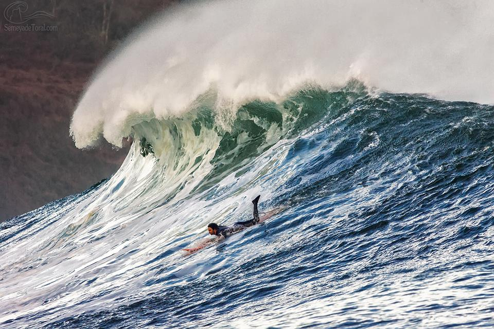
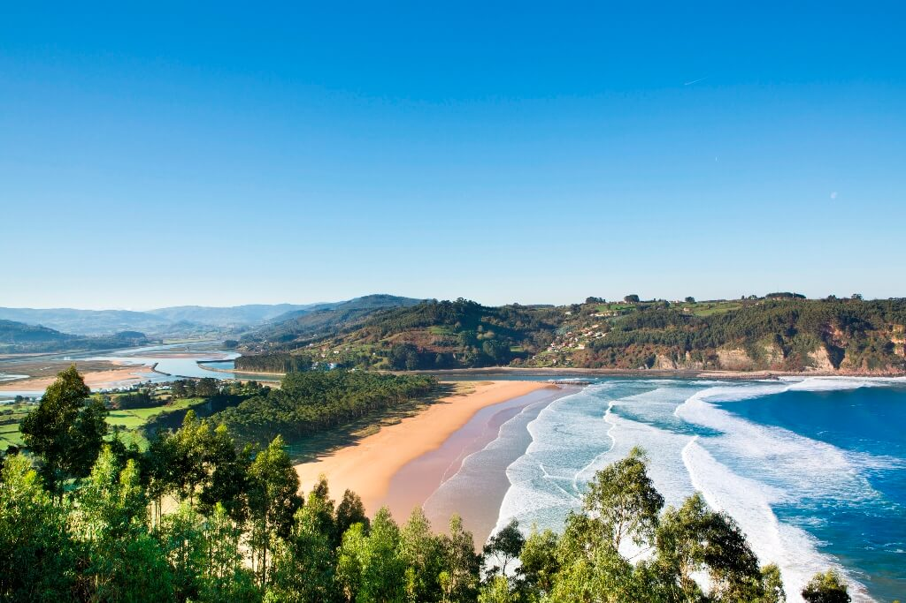
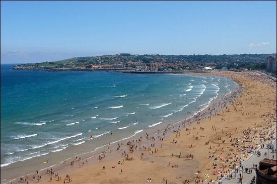
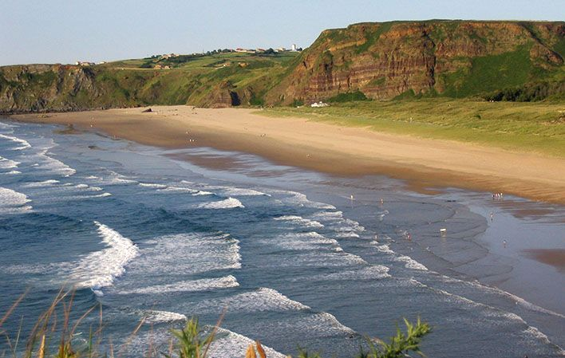
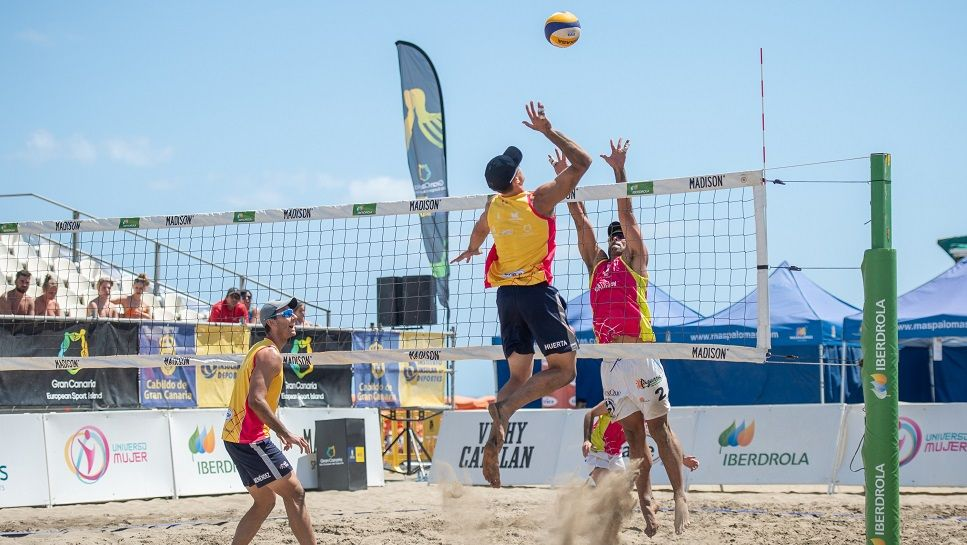
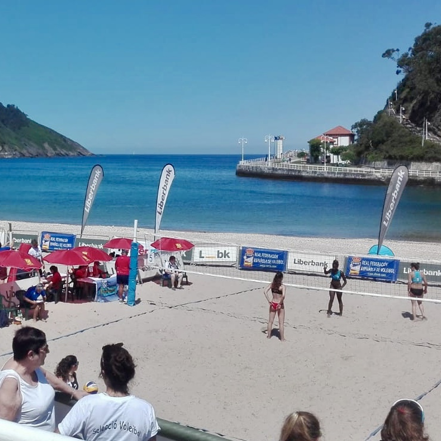

El surf es una de las actividades más destacadas y más populares a realizar en las playas. Las playas asturianas suelen contar con un bravo oleaje y unas buenas condiciones para realizar este deporte. Aquí se muestran las playas más recomendadas para dicha actividad.
Esta playa es famosa en Asturias por su gran oleaje y condiciones para el surf. Con marea baja, en la punta Oeste del arenal, se generan olas fuertes y largas de izquierdas. Con marea alta se generan fuertes oleajes en el Este. Esta playa presume de tener una de las mejores olas de la península.
Esta playa cuenta con unas buenas condiciones para el deporte generalmente. En toda su extensión se forman diversos picos de derecha a izquierda. En días propicios funciona con todas las mareas, aunque en pleamar en ocasiones forma contraolas. En bajamar, en el lado oriental de la playa rompe una ola larga, con secciones y muy interesante. Las escaleras 9 y 10 son las zonas más concurridas por los surferos. También cuenta con club de surf.
Esta playa situada en Gozón es una playa abierta, por lo que no necesita mucho mar para un buen oleaje y se pueden coger olas tanto en verano como en invierno. En ambos márgenes de la playa se dan olas muy buenas en marea baja, aunque en pleamar también funciona.
El voley playa es un deporte muy practicado en los días de verano por los bañistas. Si lo que quieres es realizar esta actividad en la comunidad asturiana, estas son las playas más recomendadas para hacerlo.
Esta playa situada en Ribadesella es muy popular en la realización de este deporte, y donde se realizan diversos torneos del mismo dentro del Principado de Asturias. Cuenta con una gran cantidad de equipamiento que se puede utilizar con libertad.
San Lorenzo es una de las playas asturianas que más deportes alberga, y el voley no es una excepción. Cuenta con varias redes en la playa para poder realizar el deporte, y es una de las playas más utilizadas en torneos de este deporte.